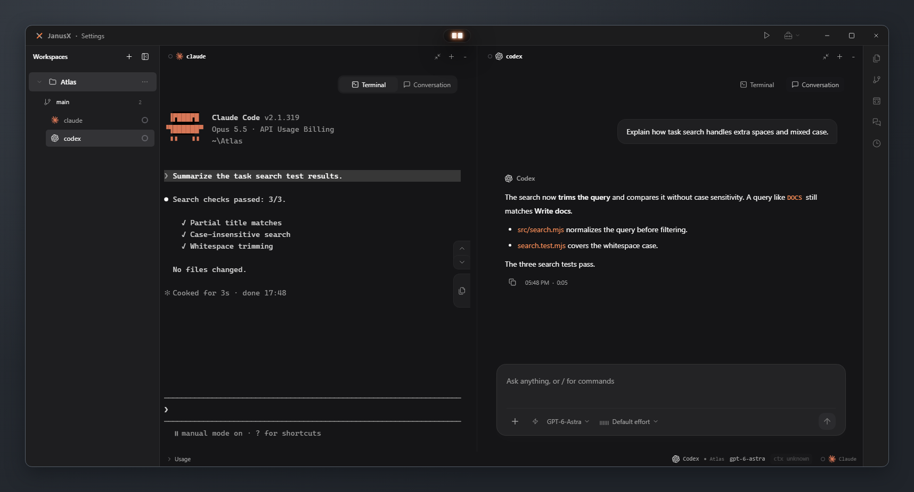
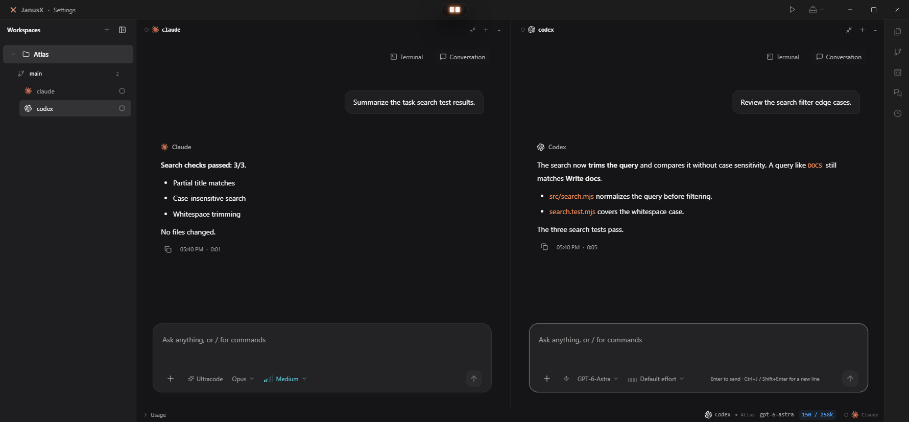
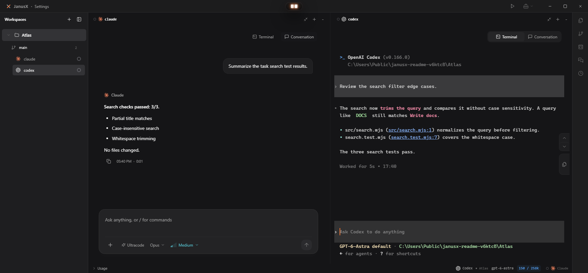
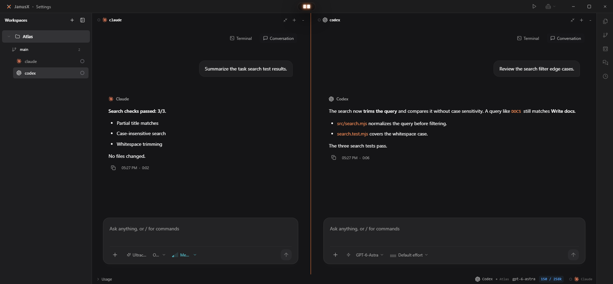
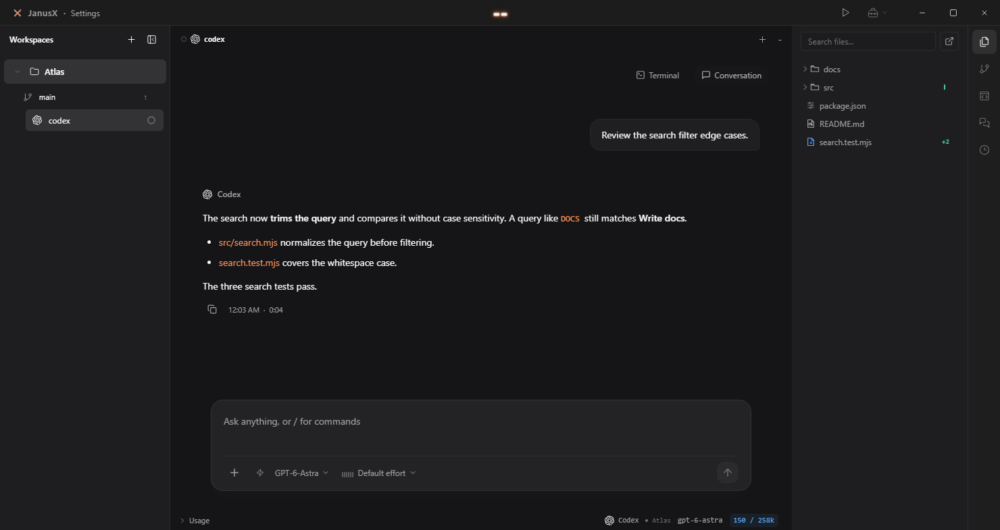
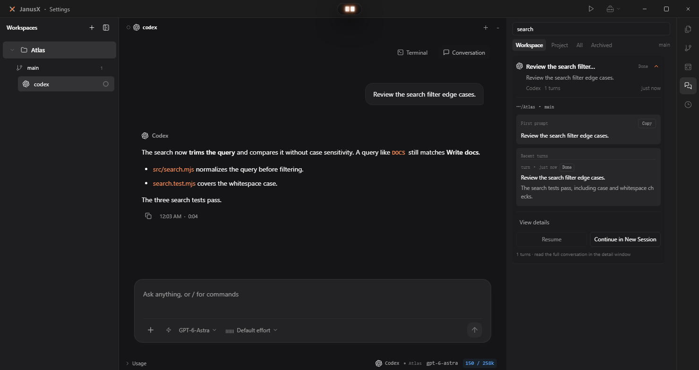
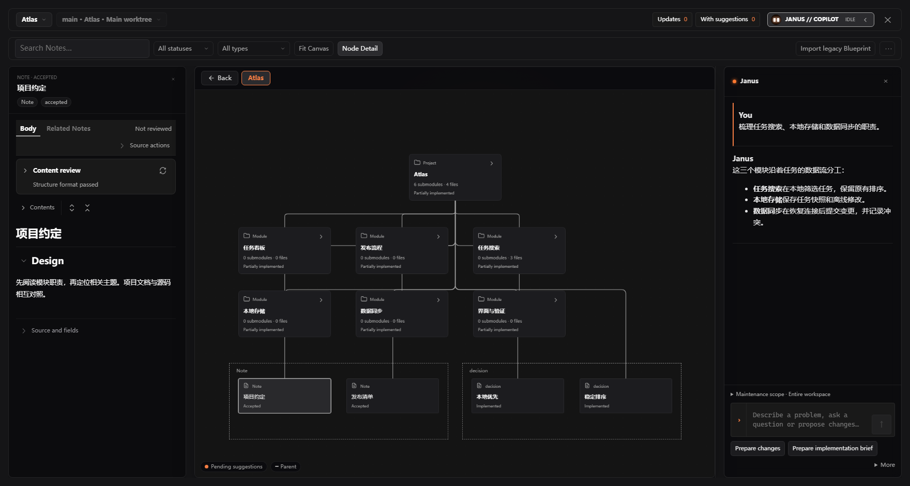

01 / INSTALLER
安装版
日常使用安装到你的电脑，自选安装位置，
创建桌面快捷方式。
MEET YOUR WORKSPACE
一个工作区，连接你的开发日常。
TERMINAL & CONVERSATION
保留熟悉的 CLI，也用对话梳理思路。按你的节奏切换。

Claude Code 终端与 Codex 对话并排，同一项目中的不同任务各有空间。
查看原图 ↗01 DOWNLOAD
01 / INSTALLER
安装到你的电脑，自选安装位置，
创建桌面快捷方式。
02 / PORTABLE
下载后直接运行，
无需完成安装向导。
安装包由 GitHub Releases 提供。版本信息加载期间，可前往发布页查看。
目前提供 Windows 下载。macOS 与 Linux 暂无公开安装包。
02 GET STARTED
日常使用选择安装版，按向导完成安装；也可以下载便携版，直接运行。
启动 JanusX，把本地项目加入工作区。从项目开始，让终端、文件和会话共享工作上下文。
选择 Shell 或已安装的 AI CLI。完成对应工具的登录或模型配置后，即可开始；支持的 CLI 还可切换对话视图。
03 TERMINAL & CONVERSATION
需要直接操作时用终端，需要梳理上下文时用对话。切换视图，继续手上的任务。
问题与回复清晰排列，文件引用随回答呈现。输入区集中放置模型和思考强度选项，阅读、追问与调整设置都在当前会话里完成。

在支持的 CLI 会话中，通过 Terminal / Conversation 切换视图。保留原来的线程与消息，回到熟悉的原生终端继续操作，无需重新说明任务。具体交互随 CLI 而异。

拖动会话标签拆分或合并窗格，调整分隔线，为当前任务留出更多空间。一边查看执行结果，一边讨论边界情况，多个会话在同一项目中并行展开。

Claude Code、Codex 等 CLI 需先安装，并完成各自的登录或模型配置。
选择 Windows 安装包 ↑04 KEEP YOUR CONTEXT
文件、Git 与会话记录收在右侧工作台。需要时展开，专注时收起，让上下文跟着任务走。
从右侧文件树查找项目文件，悬停预览或固定面板。Git 改动与提交历史也在同一侧栏，查看代码时仍能保留当前对话。

按工作区或项目筛选、搜索会话，展开查看最初的问题与最近轮次。从记录进入详情，找到继续处理任务的入口。

安装并启用 Blueprint 插件后，在画布上浏览模块与 Note，旁边阅读项目约定，再通过 Janus 对话梳理模块职责。结构、文档和讨论可以一起查看。

在反馈中附上系统版本、JanusX 版本与错误信息。